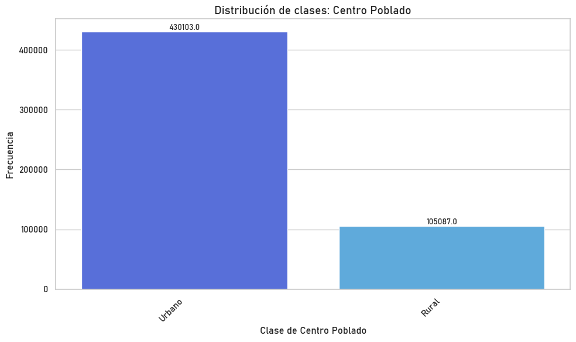
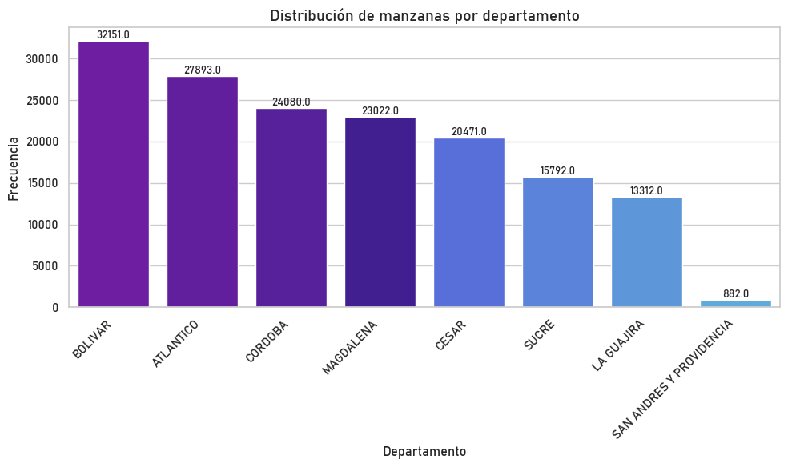

Georeferenciación manzanas#
Librerías y modulos necesarios#
import os
import folium
import warnings
import pandas as pd
import seaborn as sns
import geopandas as gpd
sns.set_style("whitegrid")
import matplotlib.pyplot as plt
warnings.filterwarnings("ignore")
from funciones.rename_nivel import *
from folium import GeoJson, GeoJsonTooltip
sns.set(style="whitegrid", palette="pastel")
Shapefile de las manzanas#
Inicialmente, importamos el conjunto de datos correspondiente a la ubicación de las manzanas de Colombia
ruta = r"C:\Users\CCOSTA397\OneDrive\Desktop\CIDEACC\convocatoria38\raw_data\MGN2024_MANZANA\MGN_URB_MANZANA.shp"
manzanas = gpd.read_file(ruta)
manzanas.head(2)
| dpto_ccdgo | mpio_ccdgo | mpio_cdpmp | clas_ccdgo | setr_ccdgo | setr_ccnct | secr_ccdgo | secr_ccnct | zu_ccdgo | zu_cdivi | ... | ano_actlz | revi_campo | manz_narea | manz_lati | manz_long | manz_viv | shape_Leng | shape_Area | FT_ACT_VIV | geometry | |
|---|---|---|---|---|---|---|---|---|---|---|---|---|---|---|---|---|---|---|---|---|---|
| 0 | 05 | 154 | 05154 | 1 | 000 | 051541000 | 00 | 05154100000 | 000 | 05154000 | ... | 0 | None | 1333.254889 | 7.962632 | -75.176358 | 1 | 0.001607 | 1.093000e-07 | VIV_CNPV2018 | POLYGON ((-75.17666 7.9627, -75.17602 7.96274,... |
| 1 | 50 | 245 | 50245 | 2 | 001 | 502452001 | 02 | 50245200102 | 002 | 50245002 | ... | 0 | None | 1719.092957 | 4.378770 | -73.759133 | 15 | 0.001549 | 1.400500e-07 | VIV_CNPV2018 | POLYGON ((-73.75941 4.37873, -73.75931 4.379, ... |
2 rows × 37 columns
manzanas.shape
(535190, 37)
Al ver el tamaño del conjunto de datos, notamos que se encuentran 533.190 observaciones en total. Lo que quiere decir que en Colombia hay 533.190 manzanas en Colombia.
Organización del conjunto de datos#
Variables de interés#
manzanas.columns
Index(['dpto_ccdgo', 'mpio_ccdgo', 'mpio_cdpmp', 'clas_ccdgo', 'setr_ccdgo',
'setr_ccnct', 'secr_ccdgo', 'secr_ccnct', 'zu_ccdgo', 'zu_cdivi',
'setu_ccdgo', 'setu_ccnct', 'secu_ccdgo', 'secu_ccnct', 'manz_ccdgo',
'manz_ccnct', 'manz_cag', 'tipo_ctstr', 'cod_ctstr', 'manz_nano',
'manz_nid', 'manz_nfe', 'manz_tipo', 'fuen_actlz', 'tipo_imgn',
'ano_fuente', 'tipo_actlz', 'ano_actlz', 'revi_campo', 'manz_narea',
'manz_lati', 'manz_long', 'manz_viv', 'shape_Leng', 'shape_Area',
'FT_ACT_VIV', 'geometry'],
dtype='object')
columnas_de_interes = [
'dpto_ccdgo','mpio_ccdgo','mpio_cdpmp','clas_ccdgo','setr_ccdgo','setr_ccnct', 'secr_ccdgo', 'secr_ccnct'
,'zu_ccdgo','zu_cdivi', 'setu_ccdgo', 'setu_ccnct', 'secu_ccdgo','secu_ccnct', 'manz_ccdgo','manz_ccnct','manz_cag',
'manz_tipo','manz_narea','manz_lati','manz_long','manz_viv','shape_Leng','shape_Area','geometry']
manzanas = manzanas[columnas_de_interes]
manzanas.columns = manzanas.columns.str.upper()
manzanas.rename(columns={'DPTO_CCDGO': 'COD_DEPTO', 'MPIO_CCDGO': 'COD_MUNI', 'MANZ_CCNCT': 'COD_MANZANA'}, inplace=True)
Código DANE de la manzana: COD_MANZANA#
Verifiquemos que en efecto el código de las manzanas coincide con los datos que se tienen del Censo Nacional de vivienda realizado en 2018.
manzanas_filtradas = manzanas[manzanas['COD_MANZANA'] == '1300110000000023010104']
manzanas_filtradas
| COD_DEPTO | COD_MUNI | MPIO_CDPMP | CLAS_CCDGO | SETR_CCDGO | SETR_CCNCT | SECR_CCDGO | SECR_CCNCT | ZU_CCDGO | ZU_CDIVI | ... | COD_MANZANA | MANZ_CAG | MANZ_TIPO | MANZ_NAREA | MANZ_LATI | MANZ_LONG | MANZ_VIV | SHAPE_LENG | SHAPE_AREA | GEOMETRY | |
|---|---|---|---|---|---|---|---|---|---|---|---|---|---|---|---|---|---|---|---|---|---|
| 297326 | 13 | 001 | 13001 | 1 | 000 | 130011000 | 00 | 13001100000 | 000 | 13001000 | ... | 1300110000000023010104 | 220109 | None | 9730.38198 | 10.407975 | -75.515979 | 40 | 0.003789 | 8.028900e-07 | POLYGON ((-75.51558 10.40799, -75.51569 10.407... |
1 rows × 25 columns
pruebas = manzanas_caribe[manzanas_caribe['SETR_CCNCT'] == '084211000'] pruebas.head()
Filtración: Región Caribe#
rename_departamentos(manzanas, 'DEPARTAMENTO')
manzanas_caribe = manzanas[manzanas['DEPARTAMENTO'].isin(regiones['CARIBE'])]
manzanas_caribe['COD_MUNI'] = manzanas_caribe['COD_DEPTO'].astype(str) + manzanas_caribe['COD_MUNI'].astype(str)
rename_municipio_region_caribe(manzanas_caribe)
manzanas_caribe.head(2)
| COD_DEPTO | COD_MUNI | MPIO_CDPMP | CLAS_CCDGO | SETR_CCDGO | SETR_CCNCT | SECR_CCDGO | SECR_CCNCT | ZU_CCDGO | ZU_CDIVI | ... | MANZ_TIPO | MANZ_NAREA | MANZ_LATI | MANZ_LONG | MANZ_VIV | SHAPE_LENG | SHAPE_AREA | GEOMETRY | DEPARTAMENTO | MUNICIPIO | |
|---|---|---|---|---|---|---|---|---|---|---|---|---|---|---|---|---|---|---|---|---|---|
| 3 | 13 | 13001 | 13001 | 2 | 004 | 130012004 | 10 | 13001200410 | 005 | 13001005 | ... | None | 2018.575094 | 10.325344 | -75.577612 | 8 | 0.001638 | 1.665100e-07 | POLYGON ((-75.57748 10.32562, -75.57736 10.325... | BOLIVAR | CARTAGENA DE INDIAS |
| 24 | 70 | 70742 | 70742 | 1 | 000 | 707421000 | 00 | 70742100000 | 000 | 70742000 | ... | None | 606.682716 | 9.248260 | -75.138194 | 0 | 0.001016 | 4.990000e-08 | POLYGON ((-75.13799 9.24816, -75.13839 9.24822... | SUCRE | SAN LUIS DE SINCE |
2 rows × 27 columns
manzanas_caribe.shape
(157603, 27)
orden_columnas = ['COD_DEPTO','DEPARTAMENTO','COD_MUNI', 'MUNICIPIO' ,'MPIO_CDPMP',
'CLAS_CCDGO', 'SETR_CCDGO','SETR_CCNCT', 'SECR_CCDGO', 'SECR_CCNCT', 'ZU_CCDGO',
'ZU_CDIVI', 'SETU_CCDGO', 'SETU_CCNCT', 'SECU_CCDGO', 'SECU_CCNCT', 'MANZ_CCDGO',
'COD_MANZANA', 'MANZ_CAG', 'MANZ_TIPO', 'MANZ_NAREA', 'MANZ_LATI',
'MANZ_LONG', 'MANZ_VIV', 'SHAPE_LENG', 'SHAPE_AREA', 'GEOMETRY']
manzanas_caribe = manzanas_caribe[orden_columnas]
Rural vs Urbano (Región Caribe)#
plt.rcParams['font.family'] = 'Bahnschrift'
reemplazos = {1: 'Urbano', 2: 'Rural'}
palette = ['#4361EE', '#4AAFF0']
plt.figure(figsize=(10, 6))
ax = sns.countplot( data=manzanas,x='CLAS_CCDGO',order=manzanas['CLAS_CCDGO'].value_counts().index,palette=palette)
ax.set_xticklabels([reemplazos.get(int(label.get_text()), label.get_text()) for label in ax.get_xticklabels()])
plt.title('Distribución de clases: Centro Poblado', fontsize=14, fontweight='bold')
plt.xlabel('Clase de Centro Poblado', fontsize=12)
plt.ylabel("Frecuencia", fontsize=12)
for p in ax.patches:
height = p.get_height()
ax.annotate(f'{height}', (p.get_x() + p.get_width() / 2, height),
ha='center', va='bottom', fontsize=10)
plt.xticks(rotation=45, ha='right')
plt.tight_layout()
plt.show()

Frecuencia de manzanas por departamento#
plt.rcParams['font.family'] = 'Bahnschrift'
palette = ['#7209B7', '#640AB2', '#560DB0', '#3A0CA3', '#4361EE', '#467BEF', '#4895EF', '#4AAFF0']
plt.figure(figsize=(10, 6))
ax = sns.countplot( data=manzanas_caribe,x='DEPARTAMENTO',order=manzanas_caribe['DEPARTAMENTO'].value_counts().index,palette=palette)
plt.title('Distribución de manzanas por departamento', fontsize=14, fontweight='bold')
plt.xlabel('Departamento', fontsize=12)
plt.ylabel("Frecuencia", fontsize=12)
for p in ax.patches:
height = p.get_height()
ax.annotate(f'{height}', (p.get_x() + p.get_width() / 2, height),
ha='center', va='bottom', fontsize=10)
plt.xticks(rotation=45, ha='right')
plt.tight_layout()
plt.show()

Mapa de ejemplo: Atlántico#
manzanas = gpd.GeoDataFrame(manzanas, geometry='GEOMETRY')
manzanas = manzanas[manzanas["COD_DEPTO"] == "08"]
m = folium.Map(location=[10.95, -74.8],zoom_start=10,tiles='CartoDB positron' )
style_function = lambda feature: {'fillColor': 'red',
'color': '#521989',
'weight': 1,
'fillOpacity': 0.0,
'opacity': 0.8}
tooltip = GeoJsonTooltip(fields=['COD_MANZANA', 'MANZ_TIPO', 'MANZ_VIV'],aliases=['Manzana:', 'Tipo:', 'Viviendas:'],sticky=True,labels=True)
geojson_layer = GeoJson(manzanas,name="Manzanas Atlántico",style_function=style_function,tooltip=tooltip).add_to(m)
folium.LayerControl().add_to(m)
os.makedirs("map_outputs", exist_ok=True)
m.save("map_outputs/mapa_manzanas_atlantico.html")